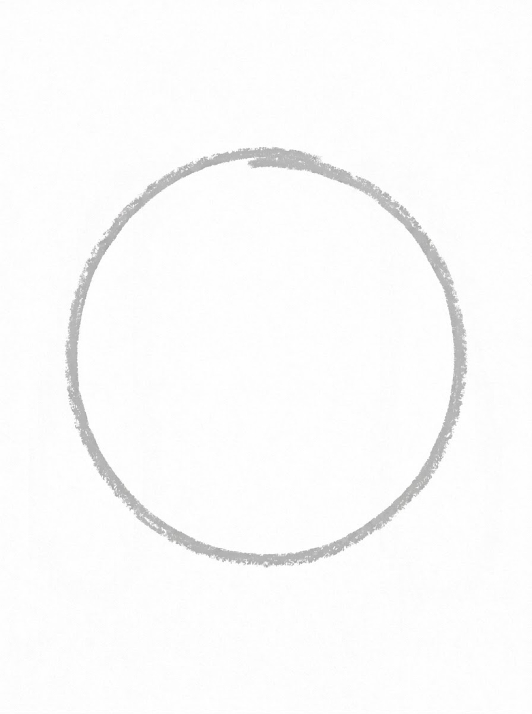
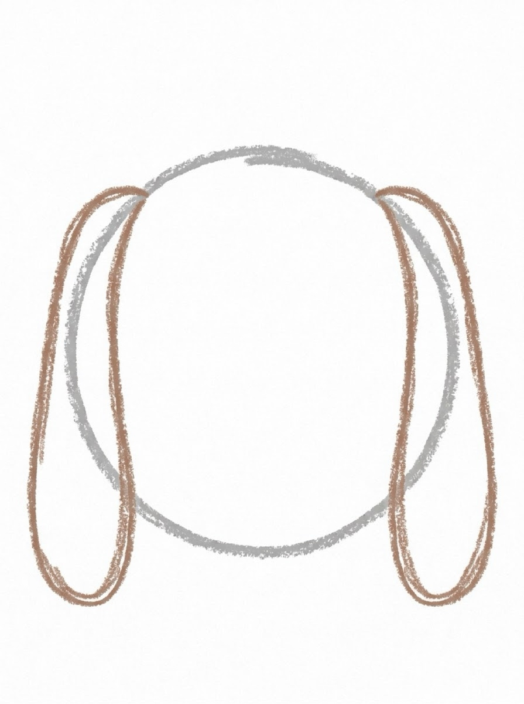
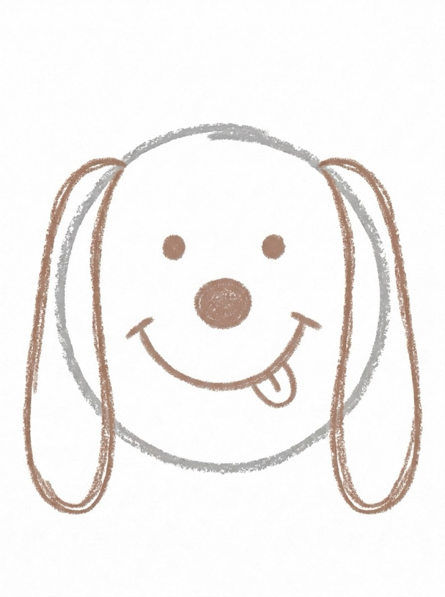
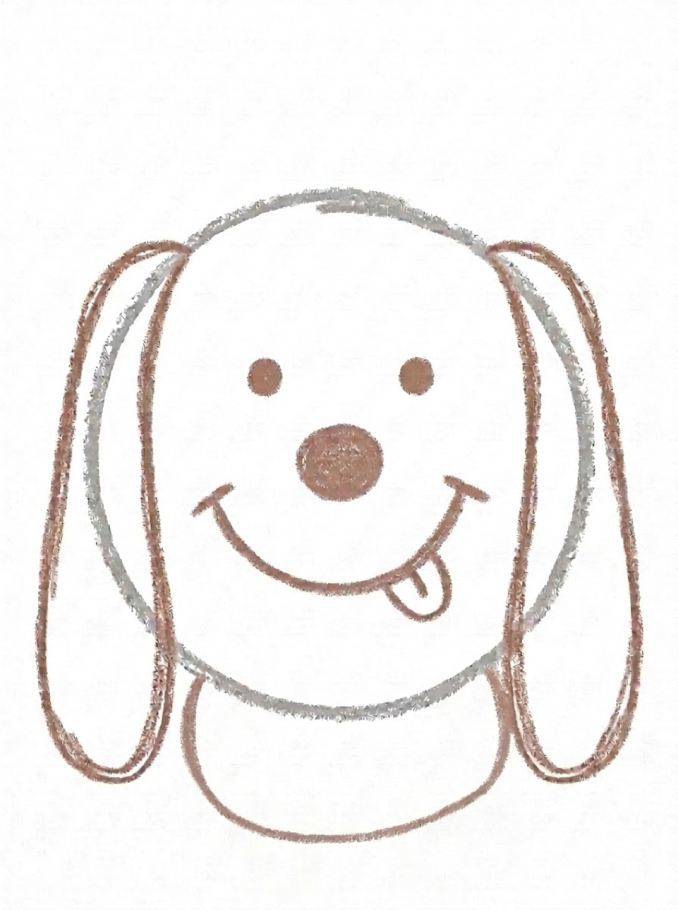
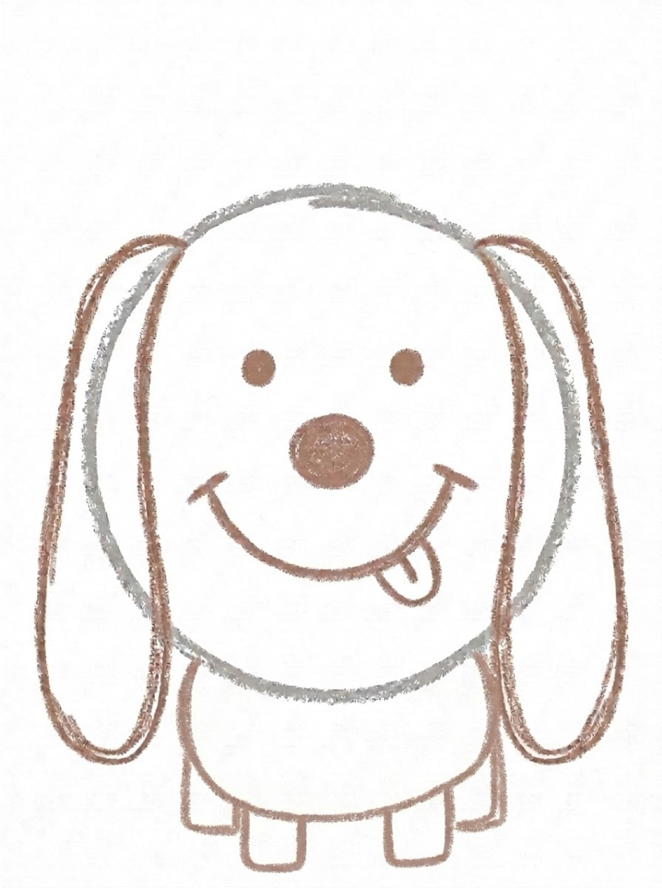
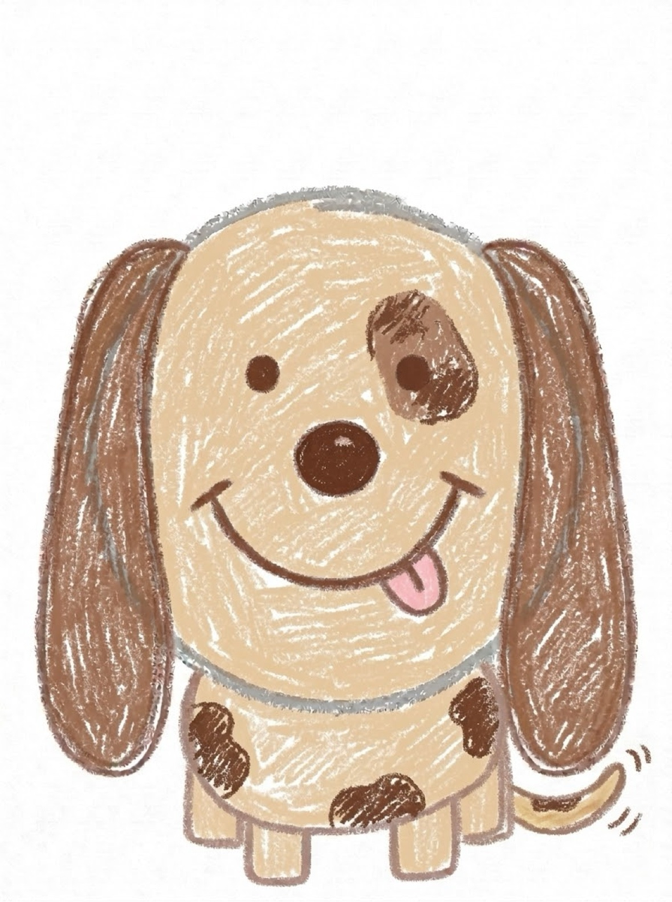

Dog Drawing for Kids How to Draw a Dog in 6 Easy Steps
Quick Answer
This free step-by-step tutorial shows kids how to draw a dog in six easy steps: a circle head, floppy ears, a happy face, an oval body, legs, and a waggy tail. Download the printable PDF, grab crayons, and follow along together. Made for ages 4 and up — no signup needed, just print and draw.
At a Glance
- Subject: How to draw a dog
- Ages: 3+
- Steps: 6 steps
- Time: ~15 min
- Difficulty: Easy
- Supplies: Paper, crayons
Every kid wants to draw their dog — or the dog they wish they had. This pup is built from circles and ovals, so even wobbly lines look charming. The floppy ears and tongue-out smile do all the personality work for you.
✏️ How to Draw a Dog: Step by Step
One step per box — draw each new part in a different color so kids can see exactly what changed.
Step 1: Step 1: The Head

Draw a big circle in the middle of your paper. This round shape becomes your dog's head.
Step 2: Step 2: Floppy Ears

Draw two long rounded ears hanging down on each side of the circle, like upside-down U shapes.
Step 3: Step 3: The Happy Face

Draw two dot eyes, a round nose, and a big smile with a tongue sticking out one side.
Step 4: Step 4: The Body

Draw a small sideways oval below the head for the body — smaller than the head circle. Let it overlap the head a little.
Step 5: Step 5: The Legs

Add four short rectangle legs under the body — two in front, two peeking out behind.
Step 6: Step 6: Tail and Spots

Draw a waggy tail curving up at the back, add a few spots, and color your pup in!
📊 Dog Drawing by Age
Every age can join in — just adjust the job.
| Age | What they can do | Tip |
|---|---|---|
| 3–4 | Trace the circle head and ears on the printable | Draw the tongue for them — it's the trickiest curve |
| 4–5 | Follow all 6 steps with a little help | Let the ears be any length — long ears look extra cute |
| 6+ | Draw solo and invent their own dog breed | Challenge: draw your dog wearing a party hat |
🖨️ Download Your Free Dog Drawing Printable
The printable lays out all 6 steps one per box, big enough for little hands — kids draw right alongside each step.
⬇️ Open Free Printable 🖨️ Print🎁 Free printable for ages 3+
🐶 Barking Portrait Challenge
Draw your dog (or a stuffed animal dog) next to this cartoon pup and compare. Which ears are longer? Which nose is bigger? Kids love spotting the differences — and drawing the same dog twice builds real observation skills without feeling like practice.
🐶 Dog Drawing Easy — Step by Step
If you're searching for how to draw a dog, this is the page. The whole tutorial is built around one question: how to draw a dog in 6 steps that a kid can actually follow. No complicated anatomy, no realistic shading — just a friendly dog made from circles, ovals, and floppy ears.
Here's the short version of how to draw a dog: Step 1, circle head. Step 2, floppy ears. Step 3, happy face (dot eyes, round nose, tongue-out smile). Step 4, oval body. Step 5, four legs. Step 6, tail and spots. That's the complete method — and it works for every dog, from a tiny puppy to a big golden retriever. Change the ear shape, the spots, and the colors, and you've drawn a different dog every time.
For the easiest possible dog drawing version, skip the spots and legs on the first try. Head + ears + face = a dog. Once your child has that, add the body, then the legs, then the tail. For kids who want to draw their own dog, start with the dog they know — floppy ears or pointy ears, spots or no spots — and the tutorial becomes a portrait.
What You'll Need to Draw a Dog
Grab a black crayon or marker for the outlines — crayons are more forgiving for little hands since mistakes blend right in. You'll want brown, tan, or gray for the body, plus pink for the tongue. Standard printer paper works fine, but slightly thicker paper (like construction paper) holds up better if your kid presses hard. That's really it — no special supplies needed.
What They're Learning
This dog tutorial practices circles and ovals — the two shapes behind most cartoon animals. Following six steps in order builds sequencing skills (first the head, then the ears), and the small face details — dot eyes, round nose — are great fine motor practice for ages 4 to 6. Naming each part as they draw it also sneaks in a little vocabulary work.
Make It Yours
Once the basic pup is done, try these twists: give your dog spots like a Dalmatian, add a collar with a name tag, or draw pointy ears instead of floppy ones for a totally different breed. Kids can also draw their own pet next to the cartoon version — comparing a real dog's ears, nose, and tail to the drawing turns it into a mini observation game.
🛒 Our Favorite Drawing Supplies
These are the supplies we reach for in our own home — washable (because kids), quality paper, and enough colors to avoid fights.
As an Amazon Associate, MomYouNeedThis earns from qualifying purchases — at no extra cost to you.
🐶 Dog Drawing Step by Step
A dog drawing step by step tutorial shows the full dog so far at each step, with only the new part highlighted. That is why dog drawing step by step works so well for kids — they always know exactly what changed, and they never have to guess where to start.
The best way to use a dog drawing step by step tutorial is one step at a time. Cover the later steps with your hand so your child only sees the current one. When they finish step one, reveal step two. This dog drawing step by step rhythm keeps kids from racing ahead and getting lost.
This page is a dog drawing step by step guide with six steps and a free printable PDF. Print it, and your child can draw right alongside each step on a big sheet.
See free dog printable for more.
🐶 Cute Dogs Drawings Easy
Cute dogs drawings easy start with round shapes and floppy ears. A round head, a round body, and long ears that hang down — that is the recipe for cute dogs drawings easy. Floppy ears read as friendly, and friendly reads as cute.
When kids make cute dogs drawings easy, the tongue helps: one small pink tongue sticking out turns any dog into a happy dog. Add a spot over one eye for extra character.
Follow the dog tutorial on this page, keep the shapes round, add the tongue and a spot. That is cute dogs drawings easy — and every kid’s favorite fridge art.
See free dog printable for more.
❓ Dog Drawing FAQs
What is the easiest way for a kid to draw a dog?
Start with a circle for the head and add two floppy ears. Give it dot eyes, a round nose, and a tongue-out smile, then add an oval body, four legs, and a waggy tail. Circles and ovals do all the work — no tricky shapes needed.
What age can kids start learning to draw a dog?
Most kids can follow the circle-head method around age 4 with a grown-up helping, and draw one on their own by ages 5 to 6. Younger children can trace the head and ears on the printable.
What supplies do we need to draw a dog?
Just paper and crayons or markers. The free printable PDF lays out all six steps one per box so kids can draw right alongside each step. Brown, black, or golden crayons make great pups.
Is the dog drawing printable really free?
Yes — every printable on MomYouNeedThis is 100% free to download and print. No signup, no payment, just tap the download button.
How do I learn how to draw a dog?
This page teaches how to draw a dog in 6 easy steps: circle head, floppy ears, happy face, oval body, four legs, tail and spots. Follow the steps in order, and you'll have a finished dog drawing. The free printable PDF lays out all six steps one per box.
What is the easiest dog drawing for kids?
This page! It teaches a dog drawing easy in 6 steps: circle head, floppy ears, happy face, oval body, four legs, and tail and spots. The dog is built from just two shapes — circle and oval — so it's easy enough for a 3-year-old to trace and a 5-year-old to draw solo.
How do I print the dog drawing tutorial?
Open the PDF and print at 100% scale (not 'fit to page') so the drawing boxes stay big enough for little hands. The printable is designed to stay large — never shrunk to force a fit.
How does a dog drawing step by step tutorial work?
A dog drawing step by step tutorial shows the full dog so far at each step, with only the new part highlighted. Kids copy one step at a time. This dog drawing step by step method is used in the six-step tutorial on this page.
What makes cute dogs drawings easy for kids?
Use round shapes, floppy ears, a small pink tongue, and a spot over one eye. Those details are what make cute dogs drawings easy and adorable.
Is this dog drawing easy for beginners?
Yes — it was made for first-time drawers. Kids only need circles and ovals, one new part at a time, and they can trace the steps on the free printable until they are ready to draw it on their own.
📚 Keep Exploring
- ✏️ All 30 Drawing Tutorials 30 free step-by-step drawing tutorials for kids.
- 🐾 Animal Coloring Free printable animal coloring pages for little learners.
- ✏️ Drawing Practice Free printable drawing pre-writing worksheet for toddlers.